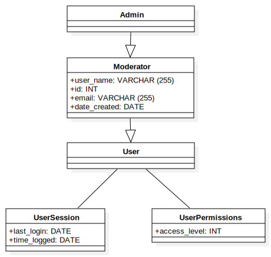
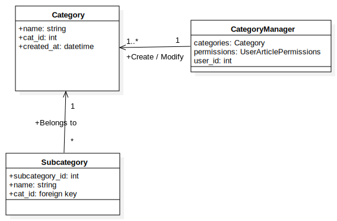
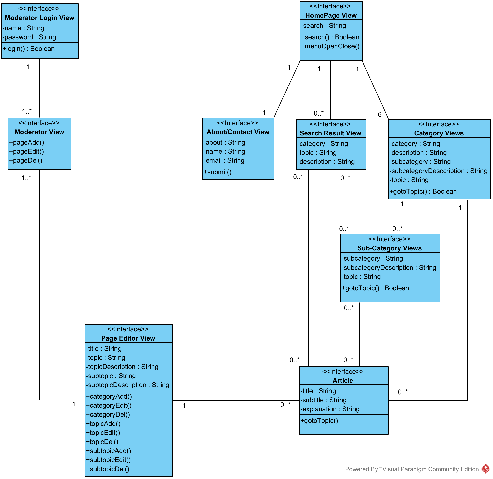
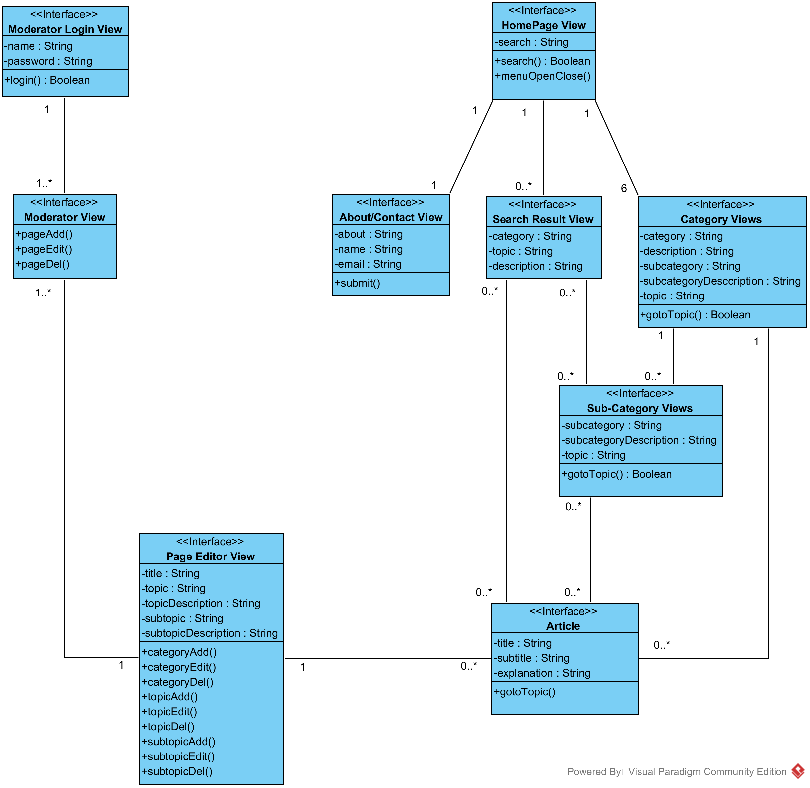

UPOD Analysis Document
Authors
Table of Contents
1.Introduction
UPOD is intended to provide students with a wide variety of knowledge and resources to assist in the learning of physics. The website will provide the essential information for learning physics ranging from kinematics to quantum mechanics.
1.1Definitions, Acronyms, and Abbreviations
UPOD
2.Purpose and Uses
The purpose of this document is to provide a more in-depth analysis of the UPOD project’s architecture. This will be achieved through the use of UML diagrams and use case diagrams, as well information on user interfaces, models, classes and the connection between them. UPOD provides:
Users
Moderators
3.Objective Classification
To do: Finish this section based on the diagram of 4.1
3.1Entity Objects
TBA
3.2Boundary Objects
TBA
3.3Control Objects
TBA
4.Architecture
4.1Entity Class Diagram
To do: Put all entity objects into one SINGLE diagram (i.e. combine 4.1.1, 4.1.2, and 4.1.3 together). After that is done, delete 4.1.1, 4.1.2, and 4.1.3.
To do: Include all attributes for each entity object

4.1.1Actors Class
Don't need this diagram in the final version.
4.1.2Category Class
Don't need this diagram in the final version.
4.1.3Article Class
Don't need this diagram in the final version.

4.2Entity/Boundary/Control Diagrams
Note: The following two diagrams are incomplete.
To do: Based on the following two diagrams, create Entity/Boundary/Control Diagrams for both User and Moderator (i.e. 4.2.1 and 4.2.2). After that is done, delete the following two diagrams.
 

4.2.1User Entity/Boundary/Control Diagram
//Insert Image Here
//Put all entity, boundary, control objects of User into ONE SINGLE diagram.
4.2.2Moderator Entity/Boundary/Control Diagram
//Insert Image Here (ONE SINGLE DIAGRAM)
//Put all entity, boundary, control objects of Moderator into ONE SINGLE diagram.
4.3Use Case Class Diagrams
4.3.1User Class Diagrams
//Insert Images Here
//Based on the diagram of 4.2.1, create a diagram for each use case (i.e. Entity + Boundary + Control + their attributes).
4.3.2Moderator Class Diagrams
//Insert Images Here
//Based on the diagram of 4.2.2, create a diagram for each use case (i.e. Entity + Boundary + Control + their attributes).
5.Additional Information
//TODO
Back to Top